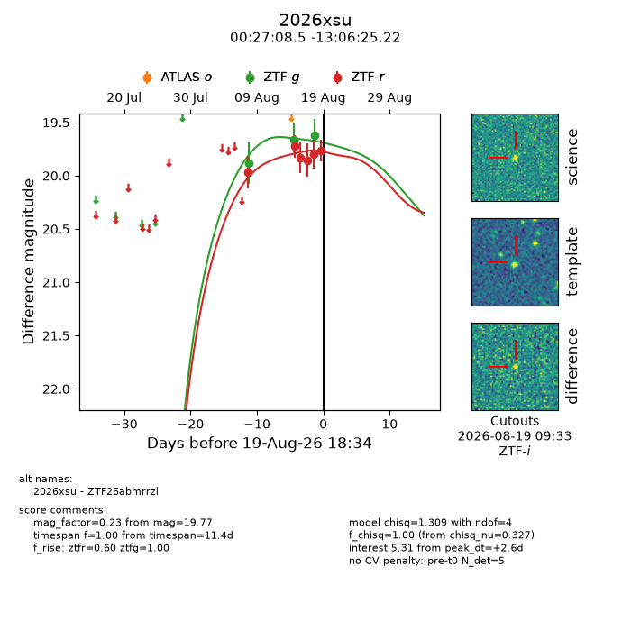
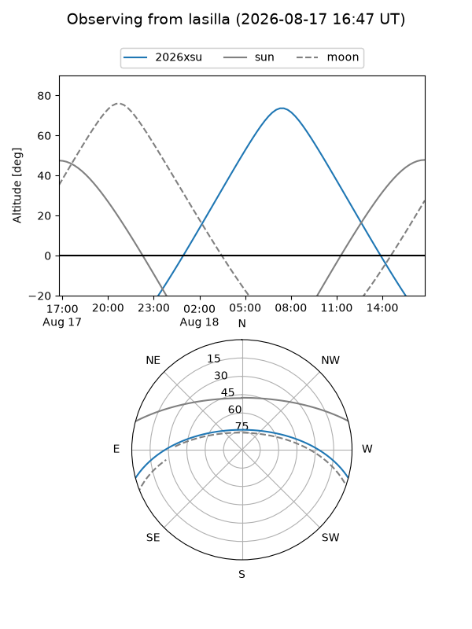
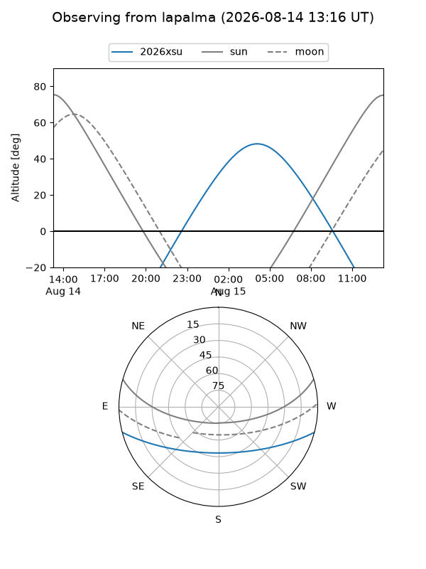
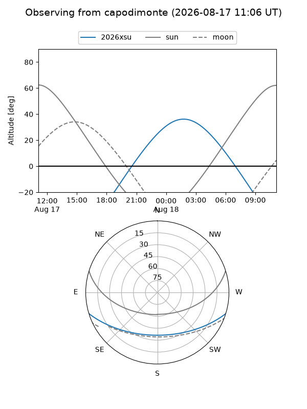
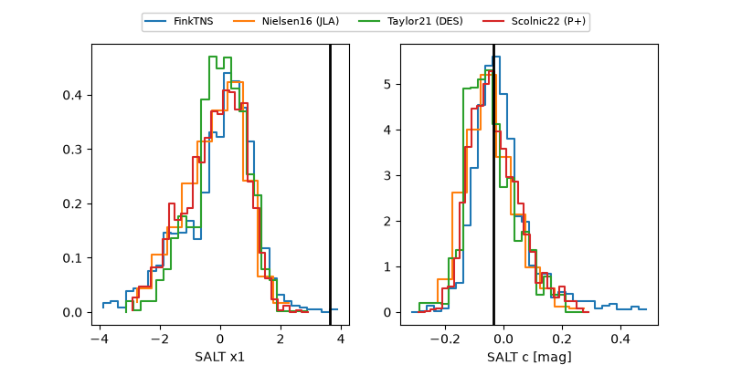

2026xsu
Target 2026xsu at 2026-08-19 18:38
Aliases and brokers:
FINK-ZTF: ztf.fink-portal.org/ZTF26abmrrzl
Lasair-ZTF: lasair-ztf.lsst.ac.uk/objects/ZTF26abmrrzl
ALeRCE-ZTF: alerce.online/object/ZTF26abmrrzl
YSE-PZ: ziggy.ucolick.org/yse/transient_detail/2026xsu
TNS name: wis-tns.org/object/2026xsu
Direct TNS query: direct search
alt names
ZTF26abmrrzl (ztf,fink_ztf)
2026xsu (tns,yse)
Coordinates:
equatorial (ra, dec) = 6.7854,-13.10701
equatorial (HMS+DMS) = 00:27:08.49,-13:06:25.22
galactic (l, b) = (99.6746,-74.87078)
Flags:
TNS type: nan
peak dt: +2.6
Photometry:
last ztfg=19.62, ztfr=19.77
3 ztfg, 6 ztfr detections
Lightcurve

Visibility



Additional plots
